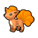
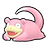

Pokémon
- Wild Chimecho have a 5% chance of holding a Colbur Berry.
- Wild Vulpix and Ninetales always hold a Rawst Berry.
- Wild Bronzong have a 5% chance of holding a Metal Coat.
- Wild Audino have a 50% chance of holding an Oran Berry and a 5% chance of holding a Sitrus Berry.
- Wild Emolga always hold a Cheri Berry.
- Wild Slowpoke have a 5% chance of holding a Lagging Tail.
- Wild Slowbro and Slowking have a 5% chance of holding a King's Rock.
- Wild Red-Striped Basculin have a 5% chance of holding a DeepSeaTooth.
- Wild Blue-Striped Basculin have a 5% chance of holding a DeepSeaScale.
Walking
Walking (dark grass)
Walking (rustling grass)
Surfing
Surfing (rippling water)
Fishing
Fishing (rippling water)
Static
| Pokémon | Level | Notes | |
|---|---|---|---|
| Landorus | 70 | Only if the player has both Tornadus and Thundurus in the party, and only if Tornadus (Black) or Thundurus (White) was caught by the current player. Only one. If defeated or run from, it reappears after defeating the Elite Four. |
|
Pokémon
- Wild Bronzor and Bronzong have a 5% chance of holding a Metal Coat.
- Wild Vulpix always hold a Rawst Berry.
- Wild Audino have a 50% chance of holding an Oran Berry and a 5% chance of holding a Sitrus Berry.
- Wild Emolga always hold a Cheri Berry.
- Wild Amoonguss have a 50% chance of holding a TinyMushroom and a 5% chance of holding a Big Mushroom.
- Wild Red-Striped Basculin have a 5% chance of holding a DeepSeaTooth.
- Wild Blue-Striped Basculin have a 5% chance of holding a DeepSeaScale.
- Wild Slowpoke have a 5% chance of holding a Lagging Tail.
Walking
Walking (dark grass)
Walking (rustling grass)
Hidden Grotto (near Youngster Wes)
When a Hidden Grotto's contents regenerate, there is a 20% chance that it will contain a Pokémon. The following Pokémon may be encountered. All of them have their Hidden Ability.
| Pokémon | Rate | Levels | |
|---|---|---|---|
 |
Amoonguss | 15% | lv. 35-40 |
| Bronzor | 4% | lv. 35-40 | |
|
 |
Vulpix | 1% | lv. 35-40 |
Hidden Grotto (near Landorus' shrine)
When a Hidden Grotto's contents regenerate, there is a 20% chance that it will contain a Pokémon. The following Pokémon may be encountered. All of them have their Hidden Ability.
| Pokémon | Rate | Levels | |
|---|---|---|---|
|
|
Amoonguss | 15% | lv. 35-40 |
 |
Golduck | 4% | lv. 35-40 |
| Swablu | 1% | lv. 35-40 | |
Surfing
Surfing (rippling water)
Fishing
Fishing (rippling water)
Swarm
During a swarm, the player has a 40% chance of encountering the swarming Pokémon, and a 60% chance that their encounter is taken from the normal encounter table.
| Pokémon | Level | |
|---|---|---|
|
 |
Slowpoke | lv. 40-55 |